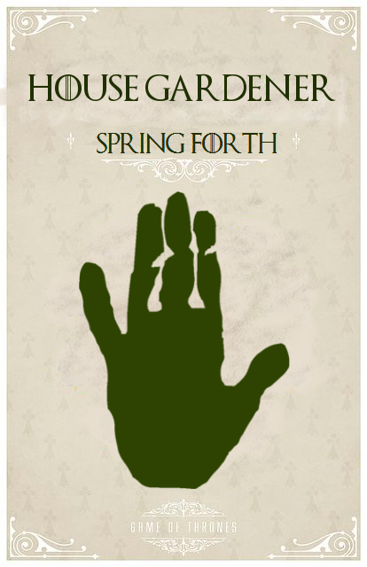

House of Westeros
House Gardener of HighGarden
 The Great House is now extinct and its founder was Garth Greenhand. Many house can trace their descent from him, including House Tyrell and House Florent. They depicted a green hand on a white shield.
The Gardeners became extinct when Aegon the Conqueror invaded Westeros. The King of the Reach, Mern IX, joined forces with the King of the Rock, Loren I, to challenge the invaders. In the battle, that became known as the Field of Fire, King Mern died incinerated when Aegon unleashed his three dragons, Vhagar, Meraxes and Balerion the Black Dread, against the combined forces of the Reach and the Rock.[3] Harlen Tyrell, the steward of Highgarden, surrendered the castle to Aegon, and he was afterward made Lord Paramount of the Reach and Warden of the South.
 House Stark's sigil is a grey direwolf on a white background, over a green escutcheon. They are one of the few noble Houses whose family motto is not a boast or threat. Instead, the House Stark family motto is a warning, one that, no matter the circumstances, will always be relevant: "Winter Is Coming."
House Stark's sigil is a grey direwolf on a white background, over a green escutcheon. They are one of the few noble Houses whose family motto is not a boast or threat. Instead, the House Stark family motto is a warning, one that, no matter the circumstances, will always be relevant: "Winter Is Coming."